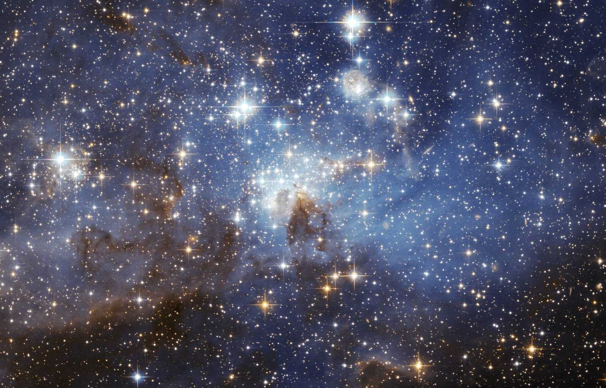

Galería del cosmos
Un recorrido visual por algunos de los lugares y fenómenos más fascinantes del universo.



Preguntas frecuentes
Conoce las respuestas a algunas de las dudas más interesantes sobre la exploración espacial.
¿Qué es la exploración espacial?
Es el estudio del espacio mediante telescopios, satélites, sondas, robots y vuelos tripulados. Su propósito es obtener información sobre planetas, estrellas, galaxias y otros cuerpos celestes. También permite desarrollar tecnologías que después pueden tener aplicaciones en la Tierra, como sistemas de comunicación, navegación y observación del clima.
¿Cómo funcionan los cohetes?
Los motores expulsan gases a gran velocidad en una dirección y generan empuje en la dirección contraria. Para despegar, el empuje debe superar el peso del cohete. Muchos utilizan varias etapas que se desprenden cuando terminan su combustible, lo que permite reducir el peso y continuar el viaje.
¿Qué hacen los astronautas?
Los astronautas realizan experimentos científicos, revisan los sistemas de las naves y estaciones espaciales, toman fotografías y estudian diferentes fenómenos. También deben mantener una rutina de ejercicio y alimentación para cuidar su salud durante las misiones. Puedes conocer más en la sección Astronautas.
¿Qué es la Estación Espacial Internacional?
Es un laboratorio científico que orbita la Tierra y funciona como un espacio de investigación compartido por diferentes países. Allí se realizan experimentos sobre biología, física, medicina y tecnología. Su ubicación permite estudiar cómo se comportan los objetos y organismos en condiciones de microgravedad.
¿Qué se explorará en el futuro?
Los proyectos espaciales buscan regresar a la Luna, preparar futuras misiones tripuladas a Marte y estudiar lugares como Europa y Encélado, lunas de otros planetas. También se desarrollan telescopios y sondas más avanzadas para investigar galaxias lejanas y descubrir nuevos planetas fuera del sistema solar.
¿Por qué se utilizan satélites?
Los satélites artificiales tienen diferentes funciones: permiten realizar llamadas, transmitir señales de televisión, proporcionar información meteorológica, facilitar la navegación GPS y observar los cambios que ocurren en nuestro planeta. Cada satélite se coloca en una órbita determinada según el trabajo que realizará.
¿Qué diferencia hay entre un planeta y una estrella?
Una estrella es un cuerpo celeste que produce su propia energía y emite luz mediante reacciones nucleares en su interior. En cambio, un planeta no produce luz visible como una estrella, sino que refleja la luz que recibe. Los planetas orbitan alrededor de estrellas.
¿Qué es la microgravedad?
Es una condición en la que los objetos parecen flotar porque se encuentran en caída libre continua, como ocurre con los astronautas dentro de una estación espacial que orbita la Tierra. La gravedad sigue existiendo, pero sus efectos se perciben de una manera diferente.
¿Existe vida en otros planetas?
Hasta ahora no existe evidencia científica confirmada de vida fuera de la Tierra. Sin embargo, los científicos investigan planetas y lunas que podrían tener condiciones adecuadas para la vida. Marte, Europa y Encélado son algunos de los lugares que despiertan especial interés.
¿Qué es un agujero negro?
Es una región del espacio donde la gravedad es tan intensa que nada puede escapar una vez que cruza su horizonte de sucesos, ni siquiera la luz. Muchos agujeros negros se forman cuando estrellas muy masivas llegan al final de su evolución.
¿Cuál es el planeta más grande del sistema solar?
Júpiter es el planeta más grande del sistema solar. Es un gigante gaseoso formado principalmente por hidrógeno y helio. Tiene una enorme tormenta conocida como la Gran Mancha Roja, que ha sido observada durante siglos.
¿Por qué el espacio se ve oscuro?
El espacio parece oscuro porque no tiene una atmósfera que disperse la luz solar como sucede en la Tierra. Aunque existen millones de estrellas, la mayor parte del universo está formada por enormes regiones de espacio vacío.
Una curiosidad para recordar
La luz del Sol tarda aproximadamente ocho minutos y veinte segundos en llegar a la Tierra. Esto significa que cuando observamos el Sol, vemos cómo era hace unos minutos. Mirar al espacio también significa observar el pasado, porque la luz necesita tiempo para viajar.